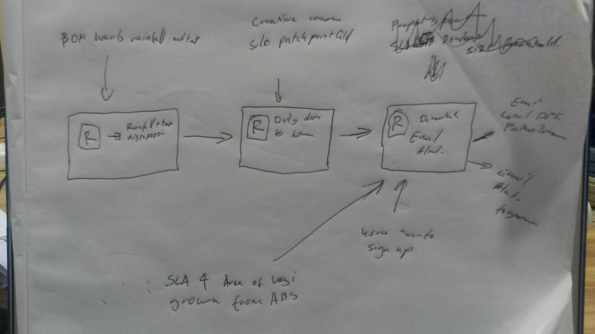

John Conner.
The John Conner project was initiated by the Toowoomba Trio to tackle a major and growing problem faced by Qld vegetable growers. This challenge is Identifying and responding to heat stress in their crops. High temperatures can cause considerable stress to crops, reducing yields and the quality of the produce grown. However, if the stress is identified early enough remedial action can be taken to minimise the damage and save the crop. The John Conner project provides a timely warning system for farmers when a heat stress event has likely occurred. Please watch our video describing the John Conner Porject. The John Conner project is built in the R environment, an open source statistical programing environment. It utilises the QLD SILO patch point weather data, available from the Qld government data portal, and ingests it though a temperature downscaling R package called chill-R This downscaling is validated against the BoM hourly temperature data set, an official GovHack data set, to show that there is good agreement between the modelled hourly data and the observed BoM data 
Then using the now validated chill-package along with a digital elevation model available from worldclim.org we then down scale the most recent temperature observations available from the QLD SILO data set. From this downscaling we then calculate the number of hours that crops have been exposed to high temperatures across the QLD weather stations. We then fit a surface across all the QLD weather stations and mapped this surface against the vegetable growing regions in Queensland determine by the GovHack ABS National Regional Profile dataset.
Using R we send out email alerts to subscribers when their crops may have been exposed to heat stress. The email alert contains information specific to their exact location as well as the state wide map of the heat stress event.
The John Conner project is still in its infancy. Continued development will bring in more data sets and downscaling of solar radiation, humidity and precipitation. Once these data sets are incorporated we will be able to predict crop disease risk, crop growth, development and yield, and crop water stress. This predictive power will support more timely crop management by farmers for better crop yields.
The full description of the R code and how it functions can be found at this repository. The most recent version of the R code can be found at the John Conner project GitHub repository.

This site is under construction. You wouldn't actually believe how much construction is happening right now. It's incredible.